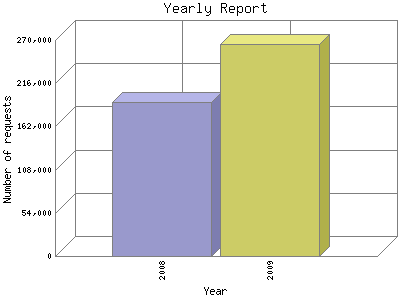

Analog 5.32
Analog 5.32 Report Magic 2.21
Report Magic 2.21The Yearly Report shows total activity on your site for each calendar year.
Remember that each page hit can result in several server requests as the images
for each page are loaded.
Note: Most likely, the first and last years
will not represent a complete year's worth of data, resulting in lower hits.

| Year | Number of requests | Percentage of the requests | |
|---|---|---|---|
| 1. | 2009 | 265,447 | 58.03% |
| 2. | 2008 | 192,003 | 41.97% |
Most active year 2009 : 265,447 requests handled.
Yearly average: 228,725 requests handled.
This report was generated on June 29, 2009 05:50.
Report time frame August 13, 2008 23:20 to June 29, 2009 00:00.
| Web statistics report produced by: | |
| Analog 5.32 | Report Magic 2.21 |